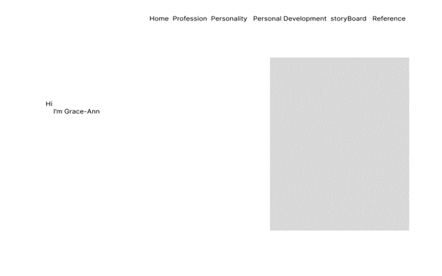
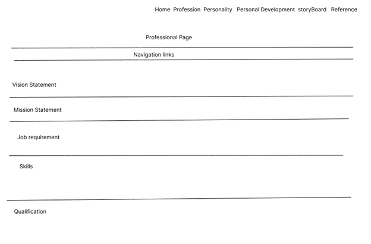
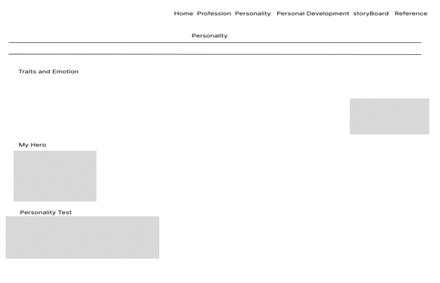
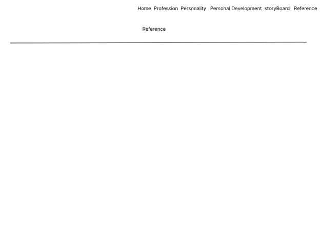

Story Board
Wireframes:





List of Web Pages and Their intent
- Home: Greet and introduces who I am
- Professional Page: Display my resume and skills
- Personality Page: Shares my traits and emotion.
- Personal Development Page: Reflects on my personal growth and Development
- Story Board: Outlines the structure of my site
- Reference Page: Lists sthe sources
Theme of the Site
The site has a black background with pink accents for a modern look, targeting young adults
List of Features
- Image Gallery
- Email link
- Navigation Bar
- Styling with CSS
- Internal Page links
- List
Free Hosting link